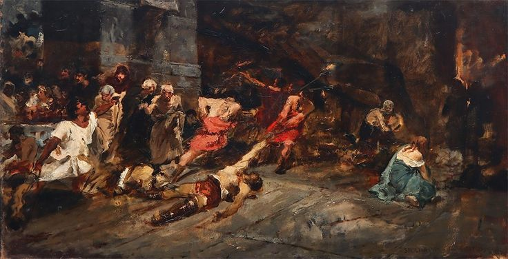
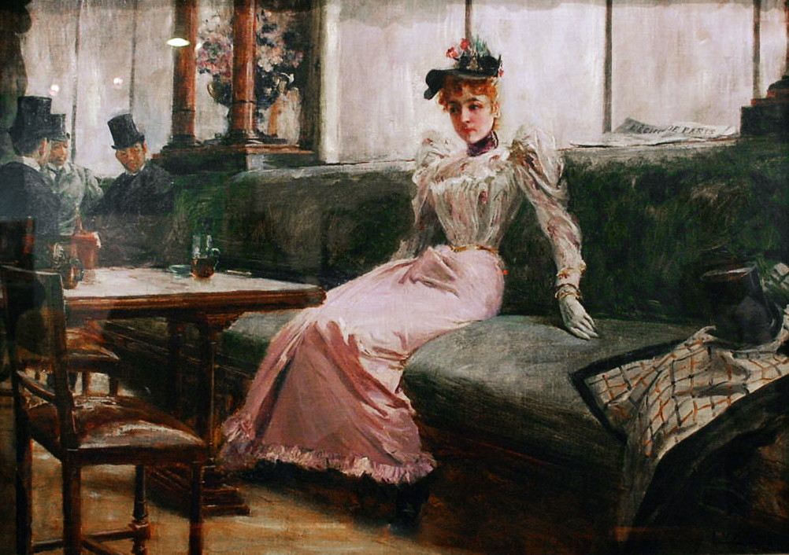
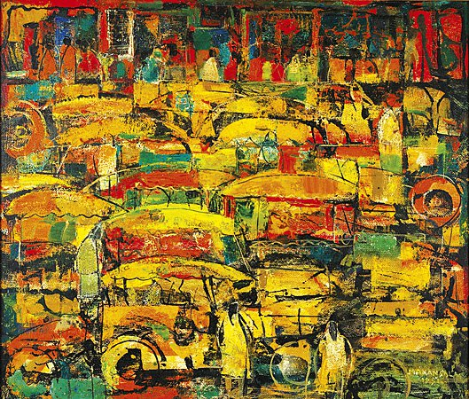

Featured Artworks
Explore a curated selection of masterpieces that define Philippine artistic heritage, from the 19th century to the modern era.

Spoliarium
Juan Luna
A powerful depiction of fallen gladiators being dragged into the spoliarium, symbolizing oppression and human suffering. It is often interpreted as an allegory of the Filipino experience under Spanish colonial rule.

The Assassination of Governor Bustamante
Félix Resurrección Hidalgo
This dramatic painting portrays the assassination of Governor Bustamante in 1719, highlighting political unrest and the struggle between church and state during the Spanish colonial period.

The Parisian Life (Interior d'un Café)
Juan Luna
A glimpse into Parisian society, this artwork features a mysterious woman in a café, reflecting themes of identity, modernity, and the subtle presence of Filipino intellectuals in Europe.

Portrait of Laureana Novicio y Ancheta
Juan Luna
A tender and intimate portrait of Juan Luna’s mother, showcasing elegance and emotional depth through delicate brushwork and soft realism.

Hulat Sweldo
Nunelucio Alvarado
A social realist painting that captures the struggles of Filipino workers waiting for their wages, reflecting economic hardship and everyday resilience.

Jeepneys
Vicente Manansala
A cubist-inspired portrayal of Philippine jeepneys, symbolizing urban life, shared experience, and the vibrancy of everyday Filipino culture.